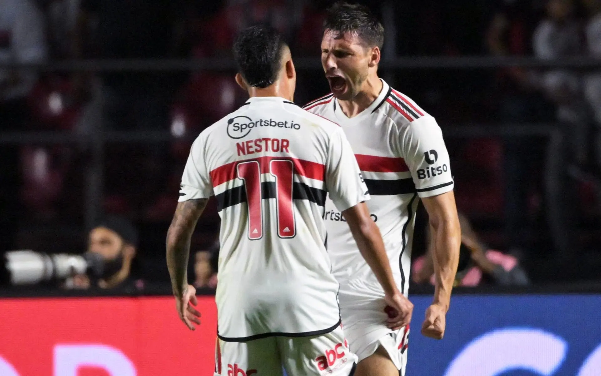

São Paulo vence o San Lorenzo, e resultado garante vaga nas quartas de final da Copa Sul-Americana
O Tricolor venceu a equipe argentina por 2 a 0, com gols de Calleri e Luciano
As principais notícias da semana, resumidas para você.
O Tricolor venceu a equipe argentina por 2 a 0, com gols de Calleri e Luciano
Clube tomou três gols de cabeça, perdeu de virada por 3 a 1 em Assunção e se despediu da competição continental
Brasileiro não faz mais parte dos planos do PSG e deve deixar a França nas próximas semanas
– Fazer o jogo que acho que é o mais importante dos últimos 10 anos do clube, contra o Corinthians, aqui no Morumbi. Lotar o Morumbi e tentar chegar na final da Copa do Brasil, que é nosso sonho e do torcedor - disse o centro-avante.